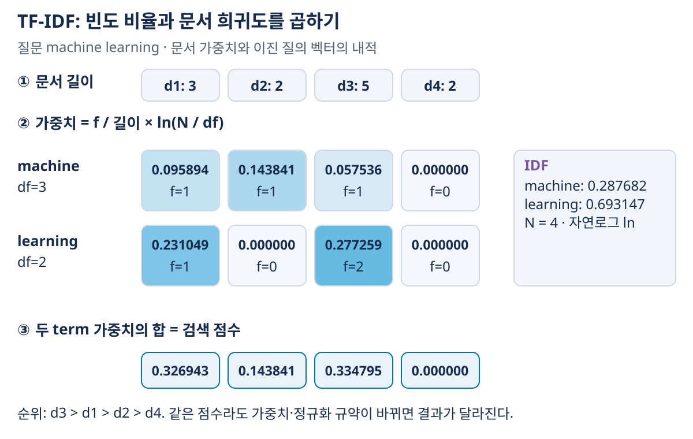
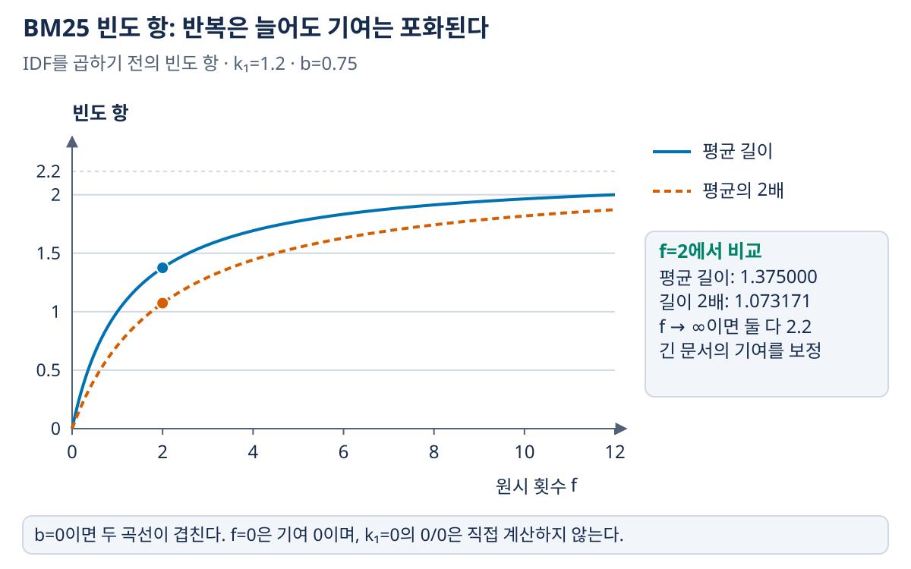
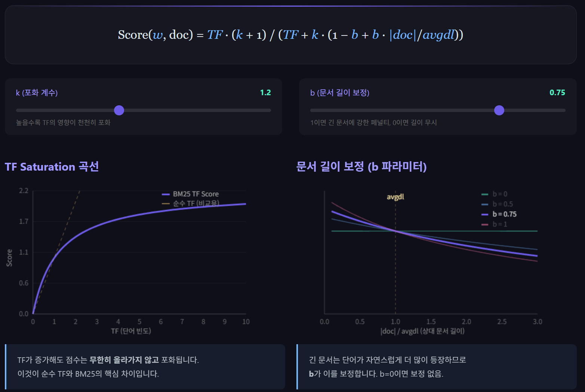

02. TF-IDF와 BM25
이전: 검색의 기본과 역색인 · 학습 안내 · 다음: 검색 평가지표
단어가 겹치는 문서만 골라도 순서는 남는다. 문서 안에서 자주 나오는 단어와 문서 집합 전체에서는 드문 단어를 구별하면 더 유용한 점수를 만들 수 있다. TF-IDF는 이 두 통계를 곱하고, BM25는 단어 반복의 포화와 문서 길이를 명시적으로 보정한다.
1. 입력과 필요한 통계
입력은 질의 $q$, 문서 $d$, 문서 집합 $D$다. 출력은 질의에 대한 문서별 점수다. 점수는 확률이 아니며, 이 공식만으로 ‘정답일 확률 80%’라고 읽을 수 없다.
| 기호 | 뜻 | 예제 값 |
|---|---|---|
| $N=\lvert D\rvert$ | 전체 문서 수 | 4 |
| $f(t,d)$ | 문서 $d$에 term $t$가 나온 횟수 | $f(learning,d_3)=2$ |
| $\lvert d\rvert$ | 전처리 후 문서의 term 수 | $\lvert d_3\rvert=5$ |
| $df(t)$ | term $t$를 포함한 문서 수 | $df(learning)=2$ |
| $avgdl$ | 문서 길이의 평균 | $(3+2+5+2)/4=3$ |
01장의 문서 집합을 다시 쓰면 다음과 같다.
| 문서 | 텍스트 | $\lvert d\rvert$ | machine 횟수 | learning 횟수 |
|---|---|---|---|---|
| $d_1$ | machine learning basics |
3 | 1 | 1 |
| $d_2$ | machine translation |
2 | 1 | 0 |
| $d_3$ | deep learning machine learning methods |
5 | 1 | 2 |
| $d_4$ | refund policy |
2 | 0 | 0 |
learning은 총 3번 나오지만 등장한 문서는 2개다. 총 등장 횟수와 $df$를 혼동하면 IDF가 틀어진다. 이 장은 자연로그 $\ln$을 사용하고, 중간 계산은 반올림하지 않으며 표의 최종값만 반올림한다.
2. TF: 한 문서 안에서 얼마나 자주 나오는가?
TF에는 원시 횟수, 길이로 나눈 비율, 로그 빈도 등 여러 정의가 있다. 이 장에서는 길이 정규화 정의를 쓴다.
$d_1$의 learning은 $1/3$, $d_3$는 $2/5$다. 원시 횟수는 두 배지만 비율은 $0.3333\to0.4$다. 빈도 비율은 문서 안의 비중이고, 전체 문서 집합에서 흔한지는 아직 반영하지 않는다. 빈 문서는 분모가 0이므로 인덱싱에서 제외하거나 빈 벡터로 처리하는 규칙을 정해야 한다.
3. IDF: 전체 집합에서는 얼마나 드문가?
이 장의 기본 TF-IDF는 다음 IDF를 쓴다.
| term | $df$ | IDF |
|---|---|---|
| machine | 3 | $\ln(4/3)\approx0.287682$ |
| learning | 2 | $\ln 2\approx0.693147$ |
| basics | 1 | $\ln4\approx1.386294$ |
모든 문서에 나온 term은 이 정의에서 $IDF=\ln1=0$이다. 이는 이 가중치로 문서들을 구별하는 기여가 0이라는 뜻이다. 단어가 문장 의미에서 무의미하다는 뜻은 아니다. 질의에만 있는 term은 $df=0$이므로 이 식에 그대로 넣지 않는다. 없는 term을 무시하거나, 별도로 정한 smoothing·어휘 정책을 적용한다.
실제 라이브러리는 log((N+1)/(df+1))+1 등의 다른 정의를 사용할 수 있다. 두 구현의 숫자를 비교하기 전에 TF, IDF, 로그 밑, 벡터 정규화 규약을 먼저 확인한다.
4. TF-IDF: 표현을 만든 뒤 점수 규칙을 정한다
문서 가중치는 $w_{t,d}=TF(t,d)IDF(t)$다. 질의 $q=machine\ learning$에 대해 질의에 있는 term의 가중치를 더하는 단순 점수를 사용하자.
이것은 문서 TF-IDF 벡터와 질의의 이진 term 벡터의 내적이다. 질의에도 TF-IDF를 적용하는 다른 방법과 구분한다.
| 문서 | machine의 문서 가중치 | learning의 문서 가중치 | 합산 점수 |
|---|---|---|---|
| $d_1$ | $\frac13\ln(4/3)=0.095894$ | $\frac13\ln2=0.231049$ | 0.326943 |
| $d_2$ | $\frac12\ln(4/3)=0.143841$ | 0 | 0.143841 |
| $d_3$ | $\frac15\ln(4/3)=0.057536$ | $\frac25\ln2=0.277259$ | 0.334795 |
| $d_4$ | 0 | 0 | 0 |
이 규약에서 순위는 $d_3>d_1>d_2>d_4$다. 희귀한 basics는 IDF가 높지만 질의에 없으므로 점수에 기여하지 않는다. ‘희귀한 단어가 있으면 무조건 검색 순위가 높다’가 아니다.

그림 읽기: 위의 문서 길이로 빈도를 나누고, 오른쪽 IDF를 곱해 가운데 칸을 계산한 뒤 열별로 더한다. 진한 칸은 큰 문서 가중치이고 확률이 아니다. d3의 machine은 길이 때문에 d1보다 작지만 learning 기여가 커 총점에서는 앞선다. 질의 벡터를 이진 벡터로 두었으므로 이 그림의 합산을 ‘질의와 문서 양쪽에 TF-IDF를 적용한 내적’으로 바꾸어 읽지 않는다.
TF-IDF는 가중치 표현이고, 내적·cosine은 그 표현을 비교하는 규칙이다. cosine은 $s=\mathbf q^\top\mathbf d/(\|\mathbf q\|\|\mathbf d\|)$로 벡터 방향을 비교한다. 질의에 없는 term도 문서 벡터의 전체 norm에는 영향을 줄 수 있어, 위 합산 점수와 순위가 달라질 수 있다. 0벡터의 cosine은 정의되지 않으므로 구현에서 따로 처리한다.
5. BM25: 반복을 포화시키고 길이를 보정한다
이 장은 IDF가 양수가 되도록 한 아래 변형을 사용한다. 질의의 각 고유 term을 한 번씩 합산한다.
여기서 $f$는 원시 term 횟수다. 앞의 정규화 TF를 그대로 넣지 않는다. 포화 계수는 $k_1$, 검색 결과 수는 $K$로 써서 구별한다.
- $k_1\ge0$: term 반복에 따른 증가·포화 정도를 조절한다.
- $0\le b\le1$: 평균 길이에 대한 문서 길이 보정 정도를 조절한다.
- $b=0$: 길이 보정이 사라진다.
- $b=1$: 분모의 길이 보정 부분이 $k_1|d|/avgdl$이 된다.
term이 없는 문서는 그 term 기여를 0으로 정의한다. $k_1=0,f=0$일 때 생기는 $0/0$을 직접 계산하지 않는다. $k_1=0$에서 term이 한 번 이상 있으면 빈도 항은 1이므로 반복 횟수 대신 포함 여부만 남는다.
같은 문서 집합으로 실제 계산
$k_1=1.2,b=0.75,avgdl=3$을 둔다. IDF는 다음과 같다.
$d_3$의 길이 보정은 $1-b+b(5/3)=1.5$다. 따라서 machine의 빈도 항은 $2.2/(1+1.2\times1.5)=0.785714$, learning은 $4.4/(2+1.2\times1.5)=1.157895$다.
| 문서 | machine 기여 | learning 기여 | BM25 합 |
|---|---|---|---|
| $d_1$ | 0.356675 | 0.693147 | 1.049822 |
| $d_2$ | 0.412992 | 0 | 0.412992 |
| $d_3$ | 0.280245 | 0.802591 | 1.082836 |
| $d_4$ | 0 | 0 | 0 |
$d_2$는 machine을 한 번만 포함하지만 짧아서 해당 term의 기여가 $d_1$보다 높다. 그래도 learning이 없어 총점은 낮다. 점수 변화는 term별 기여의 합으로 해석해야 한다.
6. 포화 곡선과 길이 보정을 숫자로 읽기
평균 길이 문서에서는 $|d|/avgdl=1$이므로 빈도 항이 $f(k_1+1)/(f+k_1)$가 된다. $k_1=1.2$일 때 다음과 같다.
| 원시 횟수 $f$ | 빈도 항 |
|---|---|
| 0 | 0 |
| 1 | 1 |
| 2 | 1.375 |
| 4 | 1.692308 |
| 8 | 1.913043 |
| 무한히 증가 | 극한은 2.2 |
반복할수록 증가하지만 선형으로 계속 증가하지 않는다. 단어를 무한히 반복해 순위를 올리는 효과를 완화한다. $k_1$을 키우면 반복 횟수 사이의 차이가 더 크게 남고 포화가 느려진다. $k_1$은 단순히 모든 점수를 같은 배수로 키우는 값이 아니다.
같은 term을 2번 포함하는 두 문서에서 길이만 비교하자. $avgdl=3,b=0.75,k_1=1.2$다.
| 문서 길이 | 길이 보정 | 빈도 항 |
|---|---|---|
| 3 | 1 | $4.4/(2+1.2)=1.375$ |
| 6 | 1.75 | $4.4/(2+2.1)\approx1.073171$ |
긴 문서는 같은 2회 반복의 상대적 중요도가 낮아진다. 하지만 짧으면 항상 좋은 것은 아니다. 필요한 정보가 긴 문서에만 있거나, 단락별 길이가 다른 데이터에서는 같은 파라미터가 최선이 아닐 수 있다.

그림 읽기: 가로축은 원시 반복 횟수, 세로축은 IDF를 곱하기 전의 빈도 항이다. 같은 f에서 파란 실선보다 주황 점선이 낮은 이유는 문서 길이가 평균의 두 배이기 때문이다. 오른쪽으로 갈수록 곡선이 평평해지는 것이 포화다. ‘긴 문서 점수가 항상 낮다’는 뜻은 아니며, 다른 term·IDF·반복 횟수까지 합산한 최종 점수는 별도로 계산해야 한다.
포화와 길이 보정을 함께 읽는 정지 화면

화면 읽기: 위 수식과 슬라이더는 k₁=1.2, b=0.75라는 촬영 조건이다. 화면의 TF는 원시 횟수 f이고, 앞의 TF-IDF에서 쓴 f/문서 길이가 아니다. 화면의 k도 검색 개수 K가 아니라 포화 계수 k₁이다. 왼쪽은 평균 길이 문서에서 반복 횟수를 늘린 IDF 이전 빈도 항이다. 오른쪽은 같은 횟수를 유지하고 상대 문서 길이를 늘리는 비교다. 화면의 축·범례·조건은 정지된 이미지에 함께 포함되어 있어 웹페이지를 열거나 슬라이더를 조작할 필요가 없다.
두 곡선의 메시지: 왼쪽은 f가 커질수록 증가 폭이 줄어 k₁+1=2.2에 가까워진다. 오른쪽은 길이 비율이 1일 때 b에 관계없이 길이 보정 부분이 1이라 곡선들이 만난다. b=0은 수평선이며, b가 클수록 평균보다 긴 문서의 기여가 더 줄고 짧은 문서의 기여는 더 커진다. 이 그림은 term 하나의 빈도 항을 비교한 것이므로 여러 term의 IDF까지 합친 최종 BM25 순위를 직접 뜻하지 않는다.
7. 역색인과 연결하고 한계를 이해하기
BM25는 각 질의 term의 posting list에서 term 빈도를 읽고, 문서 길이·$df$·$avgdl$로 기여를 누적할 수 있다. 어휘 전체의 거대한 dense 행렬을 매번 만들 필요는 없다. 문서가 추가·삭제되면 $N,df,avgdl$이 변할 수 있어 같은 문서의 점수도 바뀔 수 있다.
정확한 제품명·약어·숫자처럼 표현 일치가 중요한 질문에 희소 검색은 유용하다. 반대로 자동차와 승용차처럼 같은 단어를 쓰지 않은 관련 문서, 부정·조건·어순에 따른 의미 차이를 놓칠 수 있다. 형태소 분석·동의어 확장·학습형 희소 표현·밀집 검색을 검토할 이유다. 어느 방식이 더 좋은지는 03장의 평가로 확인한다.
8. 확인 질문과 해설
- $d_3$에
learning을 10번 더 넣으면 $df(learning)$도 10 늘어나는가? - TF-IDF의 IDF와 이 장 BM25 IDF는 모든 문서에 나온 term에 대해 같은 값을 가지는가?
- $b=0$이면 긴 문서와 짧은 문서가 언제 같은 term 점수를 받는가?
- 두 구현 모두 BM25인데 결과가 다르다면 어떤 규약을 먼저 비교할까?
학습용 해설
- 아니다. 그 문서는 이미 term을 포함하므로 $df$는 그대로다. 원시 횟수·문서 길이·평균 길이는 달라진다.
- 아니다. 기본 TF-IDF는 0이고, 이 장 BM25 변형은 $\ln(1+0.5/(N+0.5))>0$이다. 두 IDF를 섞지 않는다.
- 같은 term 원시 횟수·같은 IDF·같은 $k_1$이면 같다. 문서 길이만 달라서는 차이가 생기지 않는다.
- 토큰화·정규화, 문서 경계, IDF 변형, $k_1,b$, 질의 term 반복 처리, stopword, 자료 통계의 갱신 시점, 동점 정렬을 비교한다.
그림으로 복습하기
- TF-IDF heatmap의 각 칸을 빈도·길이·IDF로 재계산한다.
- BM25 곡선에서 포화와 길이 보정의 역할을 따로 설명한다.
- TF-IDF는 표현·정규화 규약, BM25는 원시 빈도·$k_1,b$·IDF 변형을 명시해야 결과를 비교할 수 있다. 높은 검색 점수가 실제 관련성으로 이어지는지는 다음 장의 라벨 기반 평가로 확인한다.